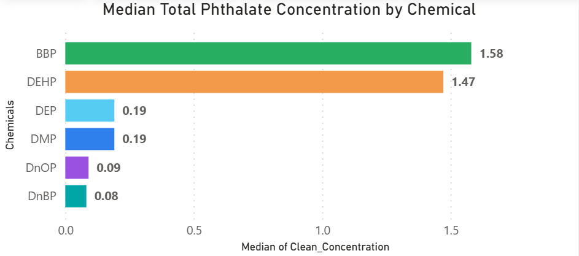
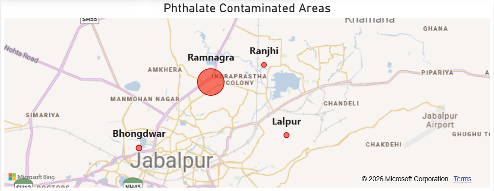
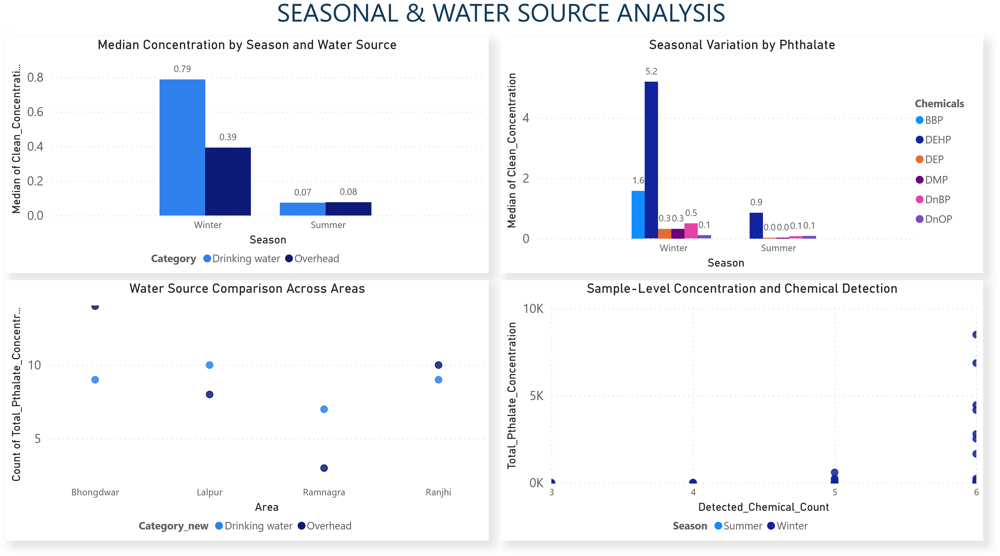

An Exploratory Analysis of Samples from Four Study Areas
Phthalates are synthetic chemicals widely used as plasticizers and additives in consumer and industrial products and are increasingly recognized as environmental contaminants of concern. Their occurrence in water is relevant because drinking water and source water can contribute to human exposure. This study presents an exploratory assessment of six phthalates—dimethyl phthalate (DMP), diethyl phthalate (DEP), di-n-butyl phthalate (DnBP), benzyl butyl phthalate (BBP), bis(2-ethylhexyl) phthalate (DEHP), and di-n-octyl phthalate (DnOP)—measured in 80 water samples collected from four study areas: Bhongdwar, Lalpur, Ramnagra, and Ranjhi.
The dataset demonstrated substantial variation among chemicals, areas, and seasons. DEHP showed the greatest concentration range, with a maximum observed value of 8,382.90 µg/L and a median of 1.46 µg/L among valid measurements. DnBP also showed substantial variability, with a maximum concentration of 563.86 µg/L. Across all valid measurements, DEHP contributed approximately 92.8% of the summed measured phthalate concentration. Winter samples showed markedly higher total measured phthalate concentrations than summer samples, with median values of 8.03 and 1.09 µg/L, respectively.
A Mann–Whitney U test indicated a statistically significant difference in sample-level total concentrations between seasons (p < 0.001), while the difference between drinking-water and overhead-water categories was not statistically significant in this exploratory dataset (p = 0.406). A Kruskal–Wallis test indicated a statistically significant difference among study areas (p = 0.022).
Data completeness varied substantially among compounds. DnBP had 96.2% valid observations and DEP 92.5%, whereas BBP had only 18.8% valid observations. The findings should be considered exploratory rather than a definitive population-wide health-risk assessment because of the limited sample size, incomplete measurements, and absence of complete sampling and laboratory methodology.
Phthalates are a broad class of synthetic esters of phthalic acid that have been extensively used as plasticizers and additives in polymers, coatings, adhesives, personal-care products, pharmaceuticals, and other industrial and consumer applications. Their widespread use has resulted in their detection in environmental media including water, air, soil, sediment, dust, and food.
The environmental occurrence of phthalates is particularly relevant to drinking-water surveillance. Drinking-water and its sources may contain multiple chemicals originating from both natural processes and human activity, making chemical monitoring important for environmental and public-health management.
The analysis was conducted using a dataset containing 80 water-sample records. Each record included a household/sample identifier, season, study area, water category, and measurements for six phthalates.
The dataset contained 45 summer observations and 35 winter observations.
| Abbreviation | Compound |
|---|---|
| DMP | Dimethyl phthalate |
| DEP | Diethyl phthalate |
| DnBP | Di-n-butyl phthalate |
| BBP | Benzyl butyl phthalate |
| DEHP | Bis(2-ethylhexyl) phthalate |
| DnOP | Di-n-octyl phthalate |
The raw dataset contained the value 9999 in several chemical fields. This value was treated as a special/missing code rather than as a measured concentration. Blank observations were also treated as missing. Spelling variants of the drinking-water category were standardized.
Descriptive statistics included the number of valid observations, median, arithmetic mean, maximum concentration, percentage of valid measurements, and sample-level total measured phthalate concentration.
Because the dataset displayed strong right-skew and extreme observations, median concentrations were emphasized alongside means. Mann–Whitney U tests were used for exploratory comparisons between seasons and water categories, while the Kruskal–Wallis test was used to examine differences among study areas.

| Compound | Valid Observations | Median (µg/L) | Mean (µg/L) | Maximum (µg/L) |
|---|---|---|---|---|
| DMP | 44 | 0.191 | 4.631 | 35.426 |
| DEP | 74 | 0.055 | 0.205 | 2.860 |
| DnBP | 77 | 0.080 | 27.562 | 563.862 |
| BBP | 15 | 1.581 | 1.339 | 2.948 |
| DEHP | 71 | 1.461 | 428.901 | 8,382.900 |
| DnOP | 67 | 0.075 | 0.283 | 3.168 |
DEHP exhibited the largest concentration range and the strongest influence on total measured concentrations. The sum of all valid measurements across the six chemicals was approximately 32,832 µg/L, of which approximately 30,452 µg/L was attributable to DEHP. Thus, DEHP accounted for approximately 92.8% of the aggregate measured concentration in this dataset.

| Area | Valid Sample Totals | Median (µg/L) | Mean (µg/L) | Maximum (µg/L) |
|---|---|---|---|---|
| Bhongdwar | 23 | 1.937 | 1,118.385 | 8,505.519 |
| Lalpur | 18 | 1.274 | 160.491 | 2,530.276 |
| Ramnagra | 17 | 8.032 | 246.846 | 2,798.001 |
| Ranjhi | 19 | 0.951 | 1.272 | 3.077 |
The four study areas showed substantial differences in total measured phthalate concentrations. The highest sample-level maximum occurred in Bhongdwar, while Ramnagra showed the highest median sample-level total concentration.
The Kruskal–Wallis test indicated a statistically significant difference among the four study areas (H = 9.61, p = 0.022). This indicates spatial heterogeneity in the observed sample concentrations, although additional pairwise and longitudinal sampling would be required to determine specific area-to-area differences.
| Season | Valid Sample Totals | Median (µg/L) | Mean (µg/L) | Maximum (µg/L) |
|---|---|---|---|---|
| Summer | 44 | 1.093 | 6.537 | 79.726 |
| Winter | 33 | 8.032 | 986.200 | 8,505.519 |
The winter median was approximately 7.4 times the summer median. The difference was statistically significant according to the Mann–Whitney U test (U = 334, p < 0.001).
| Season | Median (µg/L) | Mean (µg/L) | Maximum (µg/L) |
|---|---|---|---|
| Summer | 0.929 | 6.829 | 79.355 |
| Winter | 5.197 | 914.924 | 8,382.900 |
| Season | Median (µg/L) | Mean (µg/L) | Maximum (µg/L) |
|---|---|---|---|
| Summer | 0.069 | 0.448 | 16.378 |
| Winter | 0.501 | 63.714 | 563.862 |
The seasonal pattern may reflect differences in source conditions, water storage, environmental transport, household practices, or other factors. The current dataset cannot distinguish among these mechanisms.
After standardizing category labels, the median total measured concentration was approximately 1.65 µg/L for drinking-water samples and 1.86 µg/L for overhead-water samples.
The Mann–Whitney U test did not indicate a statistically significant difference between the two categories (U = 822, p = 0.406). Therefore, the available data do not provide sufficient evidence of a systematic difference between the two water categories.

| Compound | Valid Measurements | Valid Percentage |
|---|---|---|
| DMP | 44 / 80 | 55.0% |
| DEP | 74 / 80 | 92.5% |
| DnBP | 77 / 80 | 96.2% |
| BBP | 15 / 80 | 18.8% |
| DEHP | 71 / 80 | 88.8% |
| DnOP | 67 / 80 | 83.8% |
BBP represents the largest data-completeness limitation, with only 15 valid measurements out of 80. Its summary statistics should therefore be interpreted more cautiously than those of compounds with greater analytical coverage.
The observed DEHP concentrations can be compared for context with the U.S. Environmental Protection Agency maximum contaminant level of 0.006 mg/L, equivalent to 6 µg/L, for DEHP in public drinking water in the United States.
Of the 71 valid DEHP observations in this dataset, 22 observations (31.0%) were above 6 µg/L.
The most prominent analytical feature of the dataset was the dominance of DEHP in total measured concentration. DEHP is widely associated with PVC and other polymer applications, and its environmental occurrence is well documented. The high values observed in several samples warrant additional investigation into possible local sources, including plastic materials, water-storage infrastructure, piping, industrial activities, or other environmental pathways.
DnBP showed a substantially lower median concentration than DEHP but a high maximum of approximately 563.86 µg/L. Its presence alongside DEHP suggests that future monitoring should investigate multiple potential phthalate sources rather than focusing exclusively on a single chemical.
The winter increase was one of the clearest statistical findings. Possible explanations include changes in water consumption and storage, temperature, rainfall and runoff, environmental transport, source-water conditions, household water-handling practices, and contact between water and plastic infrastructure. These hypotheses require targeted follow-up studies.
The statistically significant difference among study areas indicates that location may be an important factor. Bhongdwar exhibited exceptionally high maximum and mean values because of several extreme winter observations, while Ramnagra had the highest median total concentration.
The absence of a statistically significant difference between drinking-water and overhead-water samples does not demonstrate that the two categories have identical contamination profiles. Future studies should use matched sampling designs in which drinking-water and overhead-water samples are collected from the same households at the same time.
This exploratory analysis of 80 water samples identified substantial variability in six measured phthalates across four study areas and two seasons.
Overall, the dataset provides evidence of meaningful spatial and seasonal variation in phthalate concentrations and identifies DEHP and DnBP as important targets for continued monitoring. Confirmatory sampling using standardized methodology, improved analytical completeness, repeated seasonal measurements, and source-specific information is required before drawing conclusions about long-term environmental contamination or human health risk.
To produce clean, industry-standard visualizations and actionable business intelligence, the raw data in .dta format is first converted into CSV using a Python pipeline. The data pipeline then applies dimensional modeling and statistical aggregation logic to transform and structure the data for reliable analysis and visualization.
Dimensional Star Schema The relational schema was normalized into a dimensional star schema in Power BI, enabling instant cross-filtering across geographic coordinates, chemical compound classes, seasonal flags, and sampling sources.